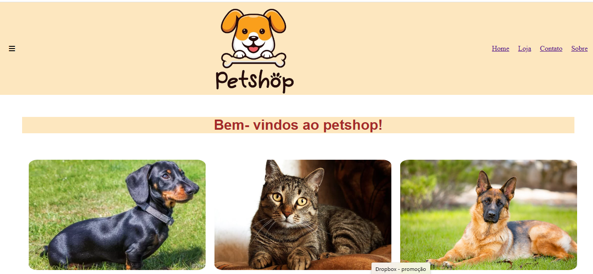
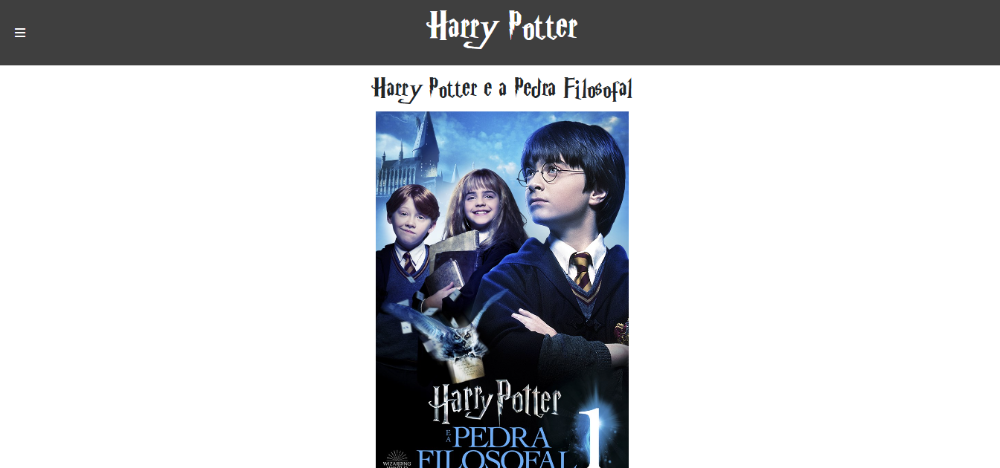

PetShop
Esse projeto foi criado com o objetivo divulgar um petshop, ultilizando css e html, o site conta com uma home onde é localizada a apresentação do estabelecimento, a loja que fica exposta os produtos á ser vendidos uma página para contatos e por fim como o petshop foi criado.
Jornal Harry Potter
O projeto do jornal foi criado com o objetivo de mostrar saga de filmes do Harry Potter, com data de publicações e a sinopsia de cada filme, projeto criado ultilizando html e css.
Lading Page de uma máquina no tempos
Projeto criado com o objetivo de uma apresentação de uma idéia revolucionária, ultilizando uma lading page para atrair novos olhares, criado ultilizando html e css.